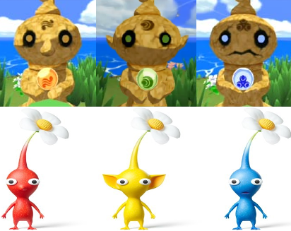
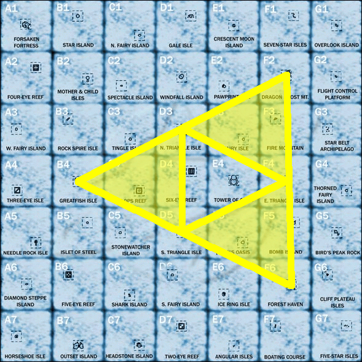
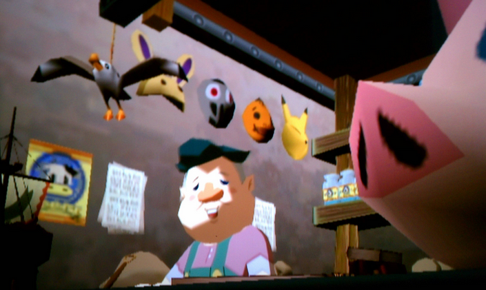
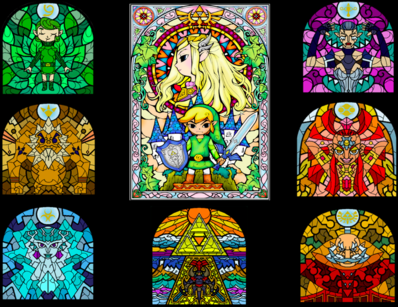

Wind Waker Trivia
6/15/2015
The Legend of Zelda: Wind Waker is full of interesting trivia, which I have compiled below.
Ocarina of Time locations
When the Great Sea map is compared to the Ocarina of Time Hyrule map, many similar areas match up. This suggests that they are in fact the same places at different points in time.
1. Gerudo Fortress - Forsaken Fortress
2. Death Mountain - Dragon Roost Island
3. Kokiri Forest - Forest Haven
4. Hyrule Castle - Underwater Hyrule Castle
Triangle Islands' Statues
Before being activated, the statues on the three triangle islands each reference Pikmin. The northern statue has a nose like a Red Pikmin, the eastern statue has ears like a Yellow Pikmin, and the southern statue has a mouth like a Blue Pikmin.
Great Sea Triforce
If you draw lines connecting the original locations of the three pearls, Dragon Roost Island, Forest Haven, and Greatfish Isle, then draw lines connecting the three triangle islands, it makes a giant Triforce. An example of this drawing can be found in Tertra's quarters in the pirate ship.
Nintendo Gallery Masks
Behind the counter in the hidden Nintendo Gallery, four masks from Majora's Mask can be seen; the Bunny hood, the All-Night mask, the Goron mask, and the Keaton mask. Furthermore, bottles of Chateau Romani can be seen on the shelf.
Phantom Ganon's Sword
The Hylian letters on Phantom Ganon's sword translate to Zubora Gabora. Zubora and Gabora are the two blacksmiths in Majora's Mask.
Hyrule Castle Stained Glass
In the chamber containing the Master Sword in Hyrule Castle, stained glass windows can be seen that depict the first six sages, Link and Zelda, and Ganon.
I've always thought those to be pretty cool. Tell me what you thought in the comments or tweet me @Zelda_Rocks.
The Author


I'm the guy who programmed this whole website from scratch and I'm responsible for most of the content you see here (including these cool author profiles!). I've been a huge fan of Nintendo since I picked up my first NES controller when I was 3. When I'm not writing articles or filming a new video, I enjoy playing and composing music, reading, math, art, and computer programming.